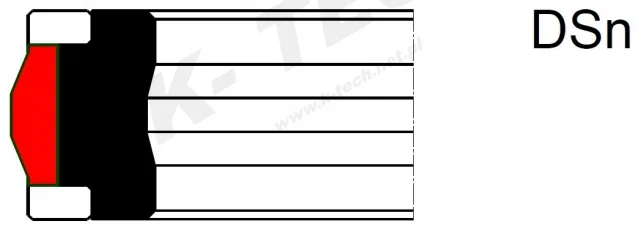
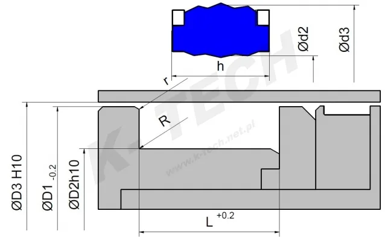
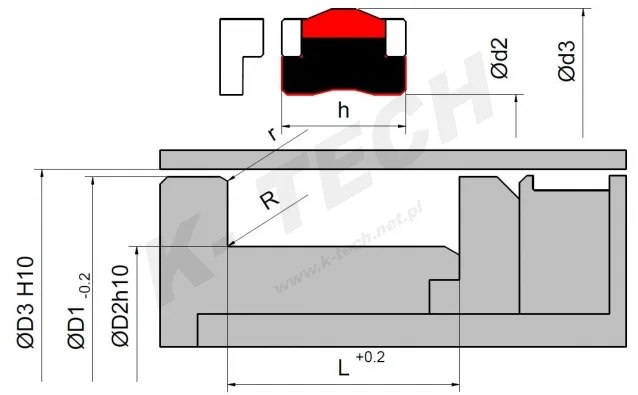
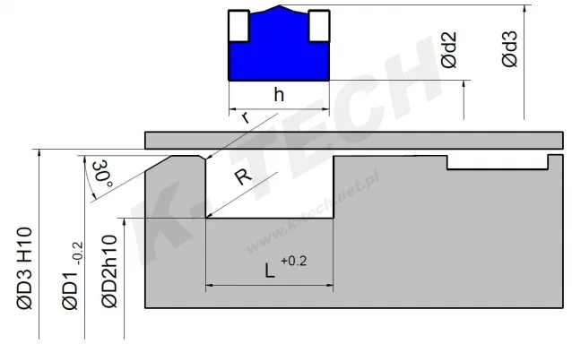
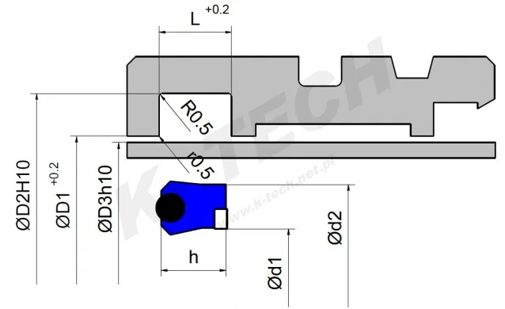
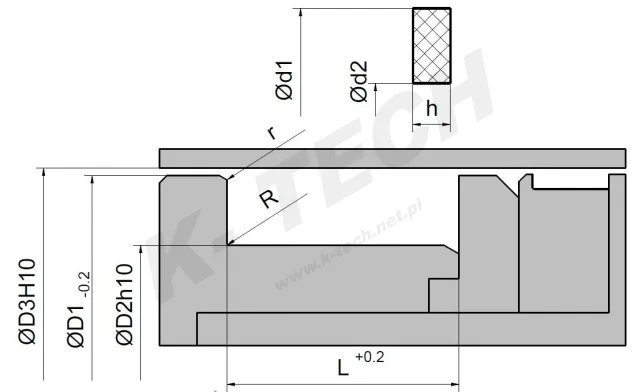
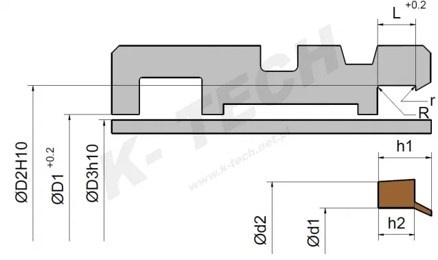
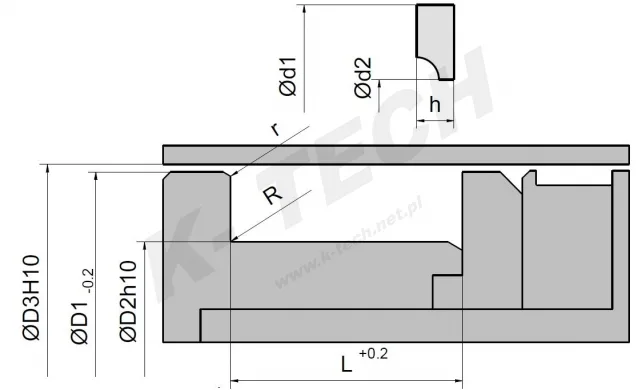

Uszczelnienia techniczne
Uszczelnienia do hydrauliki siłowej i pneumatyki, w większości do siłowników górniczych. Każdy model ma kartę z parametrami pracy oraz tabelą wymiarów uszczelki i gniazda. Gdy potrzebnego rozmiaru nie ma w tabeli, prosimy o zapytanie z wymiarami gniazda.

Uszczelnienia tłoka

DSUszczelnienie tłokaKarta w przygotowaniu
DSnUszczelnienie tłoka dwustronnego działania, wielokomponentowe, do 500 barKarta i tabela wymiarów
DZUszczelnienie tłokaKarta w przygotowaniu
Uszczelnienia tłoczyska

JSnUszczelnienie tłoczyskaKarta w przygotowaniu
Pierścienie i uszczelki

POPierścień oporowyKarta w przygotowaniu
PZPierścień zgarniającyKarta w przygotowaniu
UPUszczelka poliamidowaKarta w przygotowaniu
W podglądzie gotowa jest przykładowa karta DSn. Pozostałe modele zostaną uzupełnione z kart katalogowych K-Tech, a kolejne można dodawać samodzielnie w panelu strony.